빅데이터와 금융자료분석 프로젝트 (Team 4)
XGboost 알고리즘을 활용한 은행 대출의 부도 여부 예측 모델 구축
강상묵(20259013) 김형환(20249132) 유석호(20249264) 이현준(20249349) 최영서(20249430) 최재필(20249433)
1. 프로젝트 개요
본 프로젝트는 여러 데이터 전처리 기법(결측치, 이상치, 특성공학 등)과 머신러닝 알고리즘(이상치 분류, 차원축소, XGBoost 등)을 실제 금융데이터에 적용해보고 시사점을 도출하기 위해 작성되었습니다.
이를 위해 미국 Lending Club의 P2P 대출 데이터를 사용하였으며, 전반적인 워크플로우는 아래와 같습니다.
- 데이터의 구조, 특성 파악 (EDA)
- 데이터의 전처리 (특성에 따른 칼럼 가공, 문자형 변수 처리, 결측치 및 이상치 처리, 변수 선택)
- XGBoost 알고리즘을 이용한 대출 연체여부 예측 모델 구축 및 평가
- 샘플링, 모델 튜닝, 성과 평가, 변수 중요도 분석(SHAP), Cat/LightGBM 등 다른 모델과 비교
2. 데이터의 구조, 특성 (EDA)
데이터의 수집, 기본구조
미국 소재의 P2P 대출 전문은행인 Lending Club의 ’07~’20년 대출 데이터를 사용하였습니다. (출처 : Kaggle)
약 40만개의 데이터로, 목적변수인 대출상태를 포함해 전체 27개의 칼럼(수치형 12 + 문자형 15)으로 이루어져있으며, 목적변수는 정상(상환, Fully paid) 및 부도(연체, Charged off)로 이진분류 문제입니다.
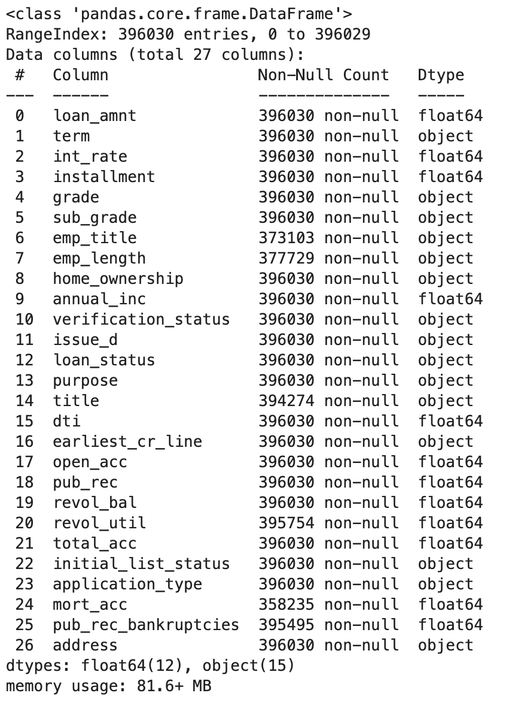
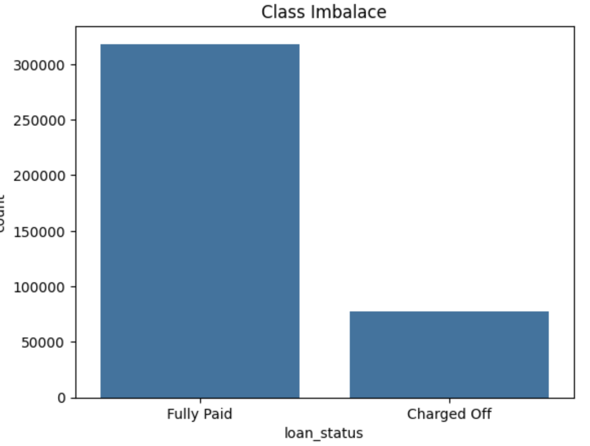
데이터의 특성
데이터의 각 칼럼별 특징을 알아보고, 적절한 전처리 방법을 탐색해보았습니다.
먼저 수치형 변수입니다. 결측치 및 이상치 처리는 별도 진행 예정으로 따로 다루지 않겠습니다.
상관관계 행렬을 Heatmap으로 살펴보았습니다. 대체적으로 변수들 간 상관관계가 미미하였으며, 일부 상관계수가 높은 변수들은 변수선택 과정에서 제외하는 등 별도의 전처리 과정을 통해 다중공선성 문제를 해결할 계획입니다.
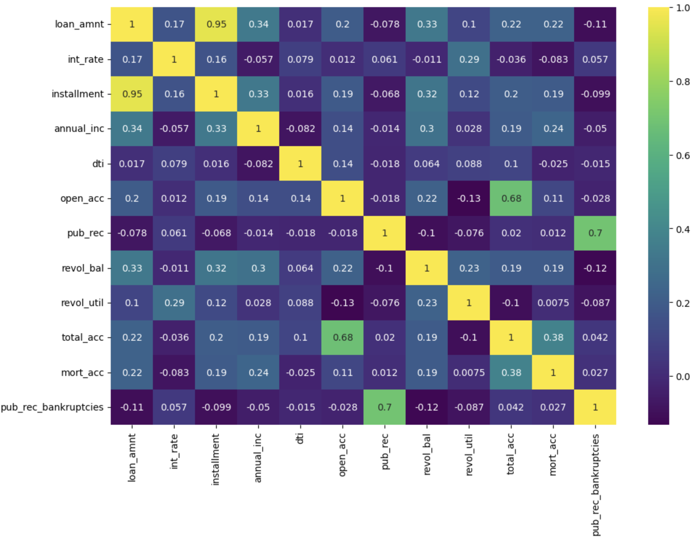
다음으로 문자형 변수입니다. 목적변수와 관련이 있는 것으로 보이는 주요 예시만 살펴보겠습니다.
먼저, 대출기간(term), 집보유형태(home_ownership), 대출목적(purpose)이 영향을 미치는 것으로 추정됩니다.
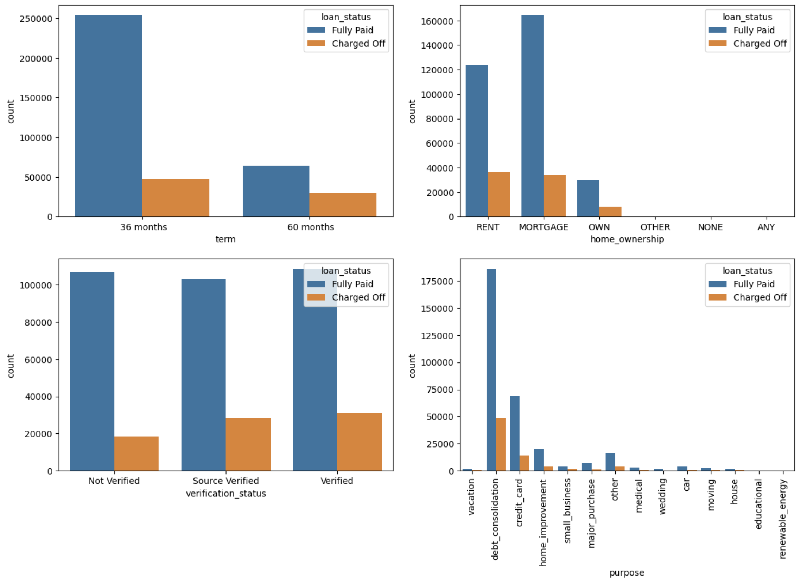
다음으로, 신용등급(A1~G5)에 따라 부도율이 높아지는 추이를 보였으며, 문자형 변수들 중 일부는 고유값이 너무 많아 분석에서 제외하는 것이 효과적일 것으로 보입니다.
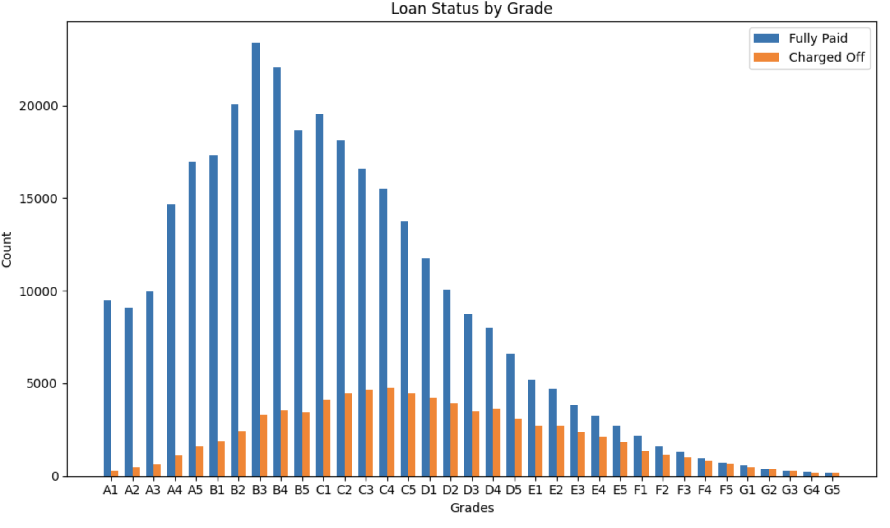
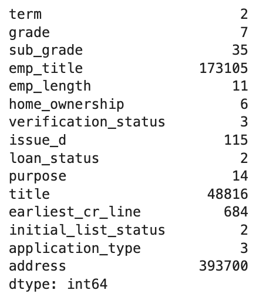
3. 데이터의 전처리
데이터의 전처리는 아래의 과정으로 실시하였습니다.
- 분석에 적합하도록 칼럼 변환 및 통합, 제거
- 변환/통합 : 주소(address)는 우편번호(zip_code)만 추출하고 제거, 대출기간(term, 36month 등)은 수치형으로 변환, 집 소유여부(home_ownership)의 극소수값들은 Other로 통합
- 불필요한 noise 방지를 위해 100개 이상의 고유값을 가진 칼럼 제거 : 직업(title), 직업글자수(emp_title), 발행일(issue_d), 최초연도(earliest_cr_line)
- 다른 변수와 중복되거나 추론 가능한 칼럼 제거 : 신용점수-대분류(grade), 근속연수(emp_length)
- 문자형 변수 처리 : 순서가 있거나 이진변수인 경우 라벨인코딩, 단순 점주인 경우 원핫인코딩 적용
- 라벨인코딩 : 목적변수(이진), 신용점수(순서 존재) / 원핫인코딩 : 이외의 문자형 변수
- 수치형 변수의 결측치 및 이상치 처리 : 중간값 처리 및 1% 이상치 제거
- 결측치 : 변수간 상관관계가 미미하고, 이후 Boruta를 적용 예정이므로 예측형 모델보다는 중간값을 채택
- 이상치 : 고차원, 많은 샘플(약 40만)을 고려, 분포에 대한 가정이 불필요한 Isolation forest 기법 채택
- 변수 선택을 통해 분석에 적합한 최종 데이터 가공 : Boruta 알고리즘 적용
- 일부 변수간 상관관계가 존재하는 점을 고려, 최적의 변수 조합을 찾고자 Boruta 알고리즘 채택
- 원핫인코딩 대상 변수를 제외한 13개(수치형+라벨)에 알고리즘을 적용한 결과 11개의 변수를 선택하였고, 원핫인코딩 대상 변수와 결합하여 최종 데이터 구성
수치형 변수에 T-SNE를 적용하여 3차원으로 축소한 결과, 이상치 제거(Isolation Forest)가 적절히 작동하였으며, Boruta 알고리즘으로 변수 선택까지 마친 후 최종 데이터는 7개의 문자형 변수(원핫인코딩 6 + 라벨인코딩 1) 및 9개의 수치형 변수, 1개의 목적변수(이진분류)로 구성되어 있습니다.
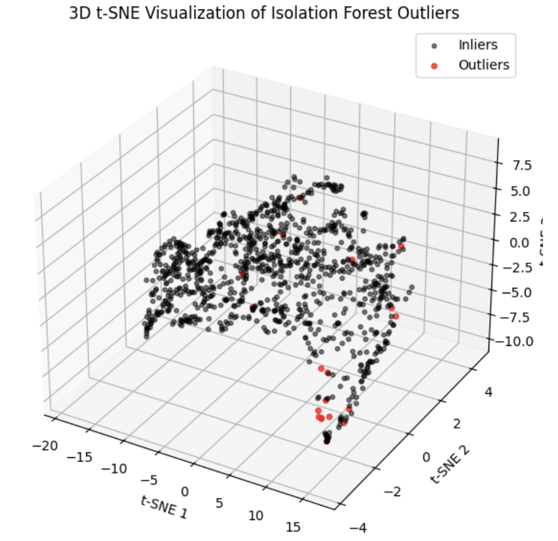
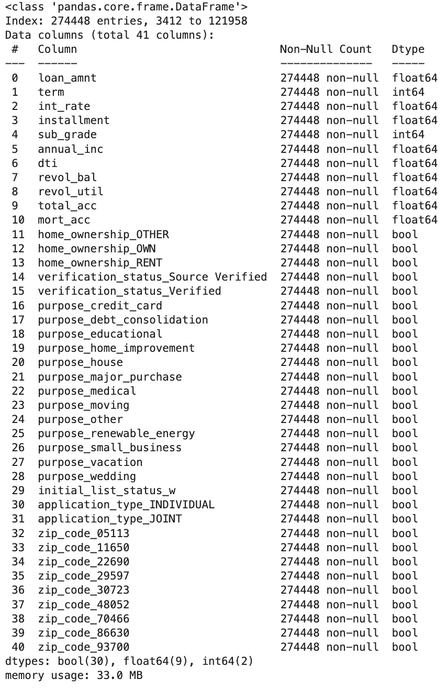
4. 대출 연체여부 예측 모델 구축 및 평가
ADASYN을 이용한 오버샘플링
모델링에 앞서, 클래스 불균형 문제는 ADASYN을 통한 오버샘플링으로 해결하였습니다. 과대평가, 과적합을 방지하고 검증 무결성을 위해 CV 과정의 훈련 데이터에만 오버샘플링하였으며, (imblearn.pipeline 활용) 이를 통해 검증은 항상 원본데이터로만 진행됩니다.
XGBoost 모델 구축
앞서 구성한 40개 변수로 “대출 연체 여부”를 예측하는 모델을 XGBoost 알고리즘을 통해 구축하였으며, 모델 튜닝은 2단계 최적화 접근법을 적용하였습니다. 이러한 방식은 과적합을 방지하고 정해진 계산자원 하에서 최대한 공정하게 파라미터를 비교할 수 있는 장점이 있습니다.
1단계: 초기 하이퍼파라미터 탐색 - 상대적으로 높은 학습률(0.1)과 고정된 n_estimators 값으로 하이퍼파라미터 조합을 탐색 - 각 조합이 동일한 학습 기회(같은 트리 개수)를 갖도록 보장 (CV 내에서 ADASYN 오버샘플링 적용)
2단계: 최적 모델 미세 조정 - 1단계에서 찾은 최적 하이퍼파라미터에 낮은 학습률(0.01)과 높은 n_estimators(10000) 적용 - 조기종료를 적용(50)하여 최적의 트리 개수 결정하고, 전체 훈련/검증 데이터를 사용하여 모델 학습
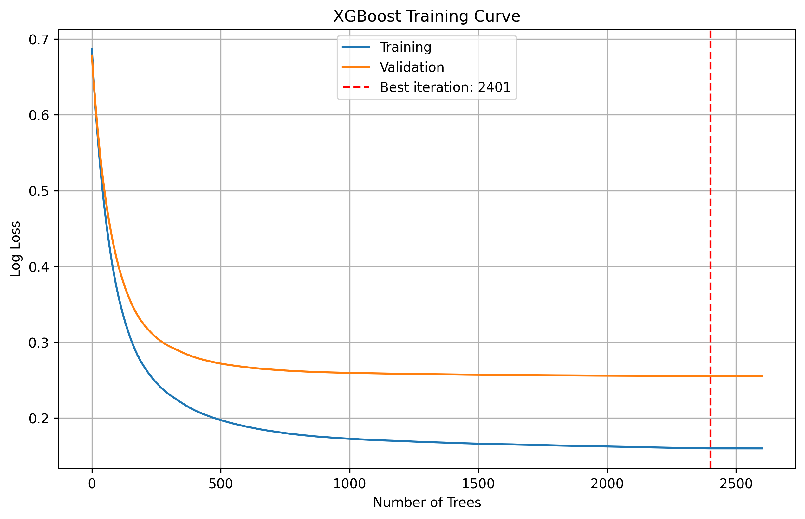
모델 일반화성능 평가
클래스 불균형 문제를 고려하여 최종 모델의 일반화 성능을 F1-Score를 중심으로 평가하도록 하겠습니다. F1-score는 약 0.94, ROC-AUC는 약 0.91로 실제 연체 여부를 잘 예측하는 것으로 나타났습니다.
특히, 모델 튜닝 과정에서 1단계 하이퍼파라미터 탐색시 최고 F1-Score가 0.93544였는데, 일반화 성능은 그와 동일한 수준이므로 과적합 방지를 위한 2단계 최적화 기법이 효과적인 것을 알 수 있습니다.
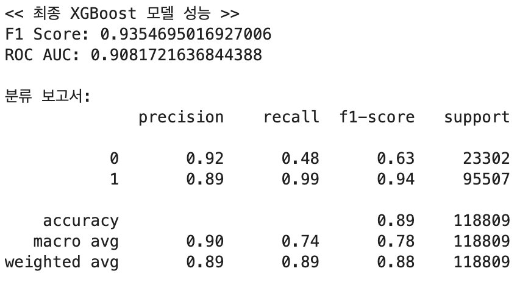
주로 사용한 XGBoost 이외에도 다양한 Gradiant boosting 계열 및 앙상블 알고리즘이 존재합니다.
- XGBoost: Regularization과 트리 구조 최적화에 강점을 가진 Gradient Boosting 모델 |
- CatBoost: 범주형 변수 자동 인식 기능이 있는 Gradient Boosting 기반 모델
- LightGBM: 빠른 학습 속도와 낮은 메모리 사용의 Gradient Boosting 기반 모델
- Soft Voting: CatBoost, LightGBM의 예측 확률 평균을 통한 결합(앙상블) 모델
- Stacking: CatBoost, LightGBM의 예측 결과를 Logistic Regression에 전달하는 메타 모델 기반 앙상블
XGBoost와 유사한 방식으로 각 모델을 튜닝, 훈련하였으며 일반화성능은 유사한 수준이였습니다. F1-Score는 앙상블(Soft Voting) 모델이, ROC-AUC 점수는 XGBoost가 가장 우수하였습니다.
| 모델 | F1 Score | ROC AUC | 모델 | F1 Score | ROC AUC |
|---|---|---|---|---|---|
| CatBoost | 0.9355 | 0.9073 | Soft Voting | 0.9356 | 0.9072 |
| LightGBM | 0.9353 | 0.9066 | Stacking | 0.9330 | 0.9072 |
그러나, 샘플이 적은 “부도”인 경우, 예측 성능이 다소 떨어지는 모습이 관측되었습니다.
부도의 절반 이상이 정상으로 분류되었으며 모든 모델에 동일한 문제가 있는 것으로 볼 때, 데이터의 한계인 것으로 보입니다. 또는 신경망 계열을 적용해보는 것도 개선방법이 될 수 있습니다.
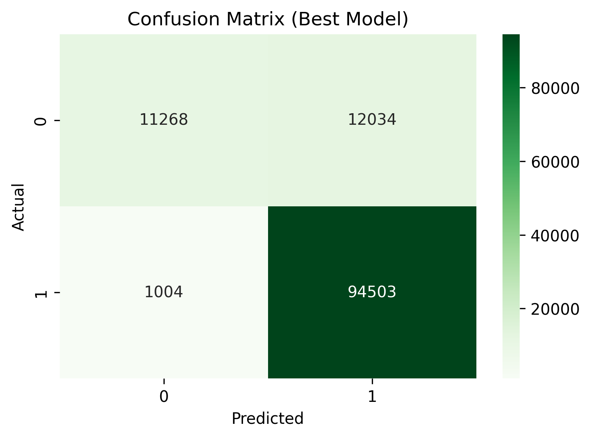
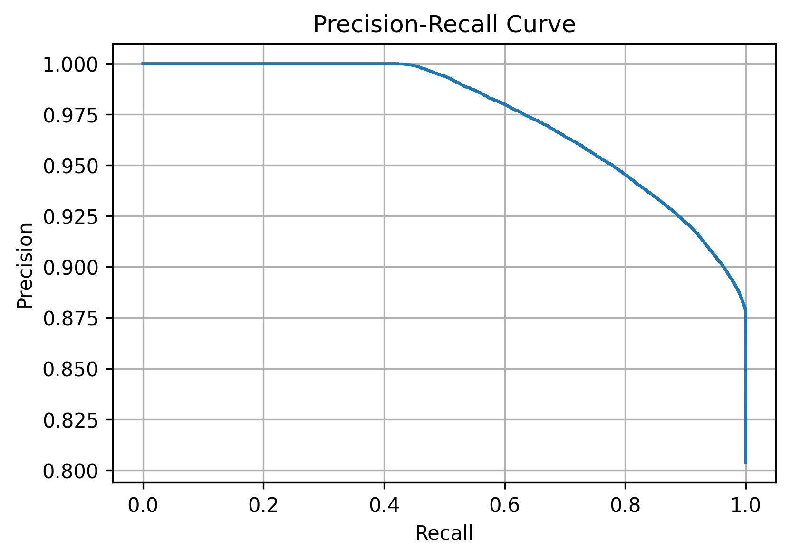
변수 중요도(Feature Importance) 분석
기본 변수 중요도 산출 결과 부도 여부에는 예상 외로 주거지가 큰 영향을 미치는 것을 확인할 수 있었으며, 이외에도 대출기간 등이 분류에 영향을 미치는 것을 알 수 있었습니다.
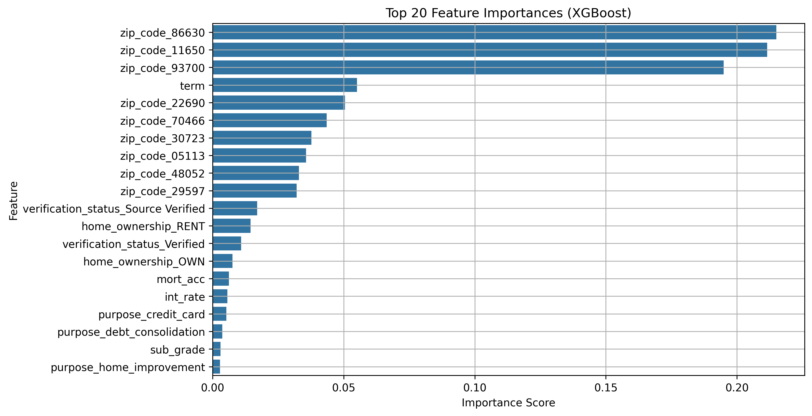
보다 상세한 변수 중요도 분석을 위해 SHAP(SHapley Additive exPlanations) 분석을 실시하여 각 변수의 중요도, 예측에 미치는 영향(방향성, 정도)을 분석하였습니다.
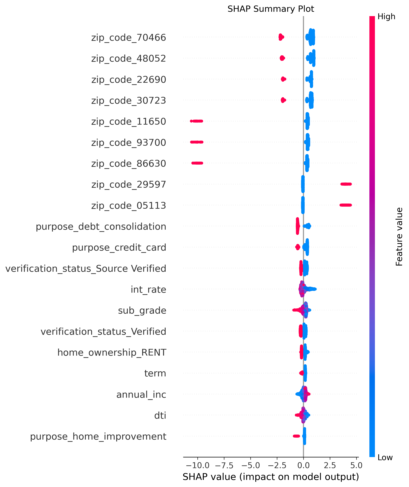
전체적인 중요도는 주거지가 큰 영향을 미친다는 점에서 유사하였으며, 변수별 특징은 아래와 같습니다.
- 상위 7개는 해당 지역에 주거(1) 시, 연체(0)가 많으므로 집값/소득수준이 낮은 주거지로 추정
- 하위 2개는 집값/소득수준이 높은 주거지로 추정
- 대출목적이 부채상환/신용카드, 대출이자가 높고, 대출기간이 길고, 소득이 낮을수록 연체 예측 가능성 증가
- 이 외에도 대부분의 변수가 대출과 관련된 일반적인 직관과 동일한 것을 알 수 있었음시사점
이번 프로젝트를 통해 실제 은행의 데이터를 살펴보고, 대출의 부도 확률 예측 모델을 구축해보았습니다.
먼저 실제 데이터를 전처리하는 과정에서 발생하는 결측치, 이상치, 적합하지 않은 변수 분류 등의 문제점을 실제로 경험할 수 있었고 Isolation Forest 및 T-SNE, Boruta 알고리즘을 적용해보면서 각 알고리즘이 어떻게 작동하는지, 어떤 방식으로 문제를 해결하고 활용되는지 알 수 있었습니다.
또한, XGBoost 알고리즘이 금융데이터 예측에 강력한 성능을 가진 것을 확인하였고, 모델 성능에는 알고리즘 선택 뿐만아니라 하이퍼파라미터 튜닝 방법(2단계 최적화) 클래스 불균형 해소(oversampling), 변수 선별(boruta) 등이 매우 중요하다는 것을 느꼈습니다.
결과적으로 은행 대출의 연체여부에는 주거지가 매우 큰 영향을 미친것으로 나타났으며, 이는 주거지에 집값/주거형태/소득/신용점수/직업 등 종합적인 요소가 모두 반영되어있기 때문인 것으로 추정됩니다. 이외에도 이자율, 대출목적/기간 등이 연체 여부 예측에 영향을 미치는 것으로 나타났으며, 그 영향은 일반적인 직관과 동일하였습니다.
데이터 자체의 한계점으로 인해 소수 표본에 대한 학습이 부족하여 예측력이 다소 떨어지는 한계점이 있었으나, 전반적으로 수업시간에 다룬 여러 알고리즘을 통해 이론이 실제 세상에 적용되는 과정을 이해할 수 있었습니다. 또한, 분석에 적합한 데이터를 구하고 전처리하는 것이 매우 중요하다는 것을 알게 된 프로젝트였습니다.